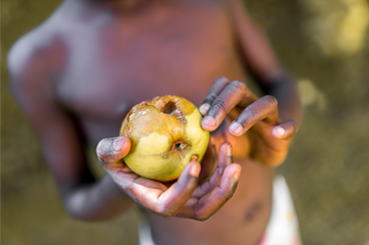
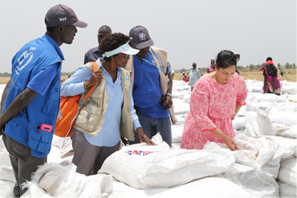

Blog Details
Food Rescue Program
Food rescue programs aim to reduce food waste by rescuing and redistributing surplus food that would otherwise go to waste. This surplus food can come from a variety of sources, such as grocery stores, restaurants, caterers, and farmers markets. The food is then distributed to people in need, such as those experiencing food insecurity or homelessness.
Food rescue programs typically involve a network of volunteers who collect the surplus food and transport it to organizations or individuals that can use it. These programs may also include education and outreach component to raise awareness about food waste and hunger.
• Feedback Global: An international non-profit organization that campaigns to end food waste at all levels of the food system. They focus on raising awareness, supporting grassroots action and influencing policy.
• ReFED: A non-profit organization that aims to reduce food waste in the United States by providing data and solutions for businesses, governments, and organizations.
• Love Food Hate Waste: A campaign run by the UK government that aims to raise awareness about food waste and provide practical advice and resources to help households reduce the amount of food they throw away.
• World Wildlife Fund (WWF): A global non-profit organization that works to address food waste as part of its broader efforts to promote sustainable food systems.
• Zero Waste Europe: A non-profit organization that promotes waste reduction and resource efficiency across Europe. They work on food waste by supporting and promoting circular economy policies, supporting cities and regions to implement circular economy policies and practices, and raising awareness and providing solutions.
• The Global FoodBanking Network (GFN) : Nonprofit organization that supports and creates food banks around the world, GFN has been working to reduce food waste by rescuing surplus food and distributing it to people in need.
These are just a few examples, there are many more organizations working on food waste reduction and food sustainability on local and global level.
Recent Posts
-

2 Comments
Help Feed Those In Need
-
 2 Comments
2 Comments
Meal Delivery Programs
-

2 Comments
Food Rescue Programs